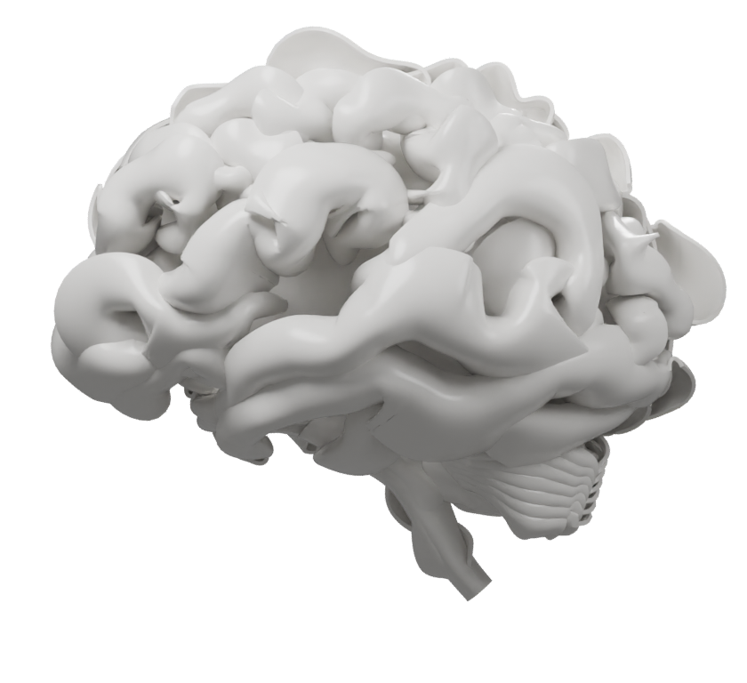

跳轉到資源
形跡
FORM INDEX
發現
收藏
搜索
⌘ K
添加網站

設計靈感庫
.
把值得回訪的設計網站，收在一處。
瀏覽網站
在雕塑上停一會，藤蔓會發芽
按住雕塑，讓藤蔓生長
網站預覽
全部資源
添加網站
添加網站
網站名稱
網址
分類
簡介
可選
預覽圖片網址
可選
取消
保存網站
偏好設置
外觀
淺色
深色
跟隨系統
默認排序
手動置頂
按名稱
我的 Figma 入口
可選
可填入你的 Figma 文件、項目或團隊鏈接。
打開 Figma
取消
保存偏好
移除網站
取消
移除
編輯網站
移到最前
移除網站